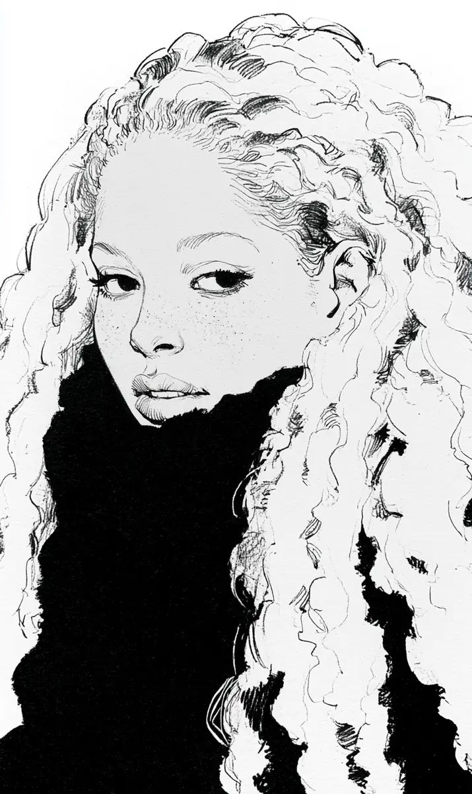

보람이 현관에 들어서자마자 할머니가 머리부터 잡았다.
[The moment Boram stepped into the entryway, her grandmother grabbed her by the hair.]
“이 안에 누구 숨겼어.”
[”Who are you hiding in here.”]
“아무도 없어요.”
[”Nobody.”]
할머니는 대답을 안 믿고 손가락을 곱슬 속으로 밀어 넣었다.
[Her grandmother did not believe the answer and pushed her fingers into the curls.]
“머리가 이만한 여자는 이유가 있는 거야.”
[”A woman with hair this big has a reason for it.”]
보람은 신발도 못 벗고 끌려가 상 앞에 앉았다.
[Boram was dragged to the low table before she could even take off her shoes.]
할머니가 참빗을 들고 뒤에 섰다.
[Her grandmother stood behind her with a fine comb.]
“커피 냄새가 나네.”
[”Smells like coffee.”]
“회사에서 나요.”
[”That is from the office.”]
“회사가 커피를 두 잔 사 주디.”
[”And does the office buy two cups.”]
빗이 머리 속에서 뭔가에 걸렸다.
[The comb caught on something inside her hair.]
할머니가 볼펜을 한 자루 뽑아 들었다.
[Her grandmother pulled out a ballpoint pen.]
볼펜에는 회사 이름과 남자 이름이 찍혀 있었다.
[The pen was printed with a company name and a man’s name.]
“김 대리.”
[”Assistant Manager Kim.”]
“판촉물이에요.”
[”It is a promotional freebie.”]
“판촉물이 왜 니 머리에서 자.”
[”Then why is the freebie sleeping in your hair.”]
할머니는 볼펜을 증거처럼 상 위에 올려놓았다.
[Her grandmother set the pen on the table like evidence.]
빗질이 다시 시작됐다.
[The combing started again.]
이번에는 머리핀이 나왔다.
[This time a hairpin came out.]
“이거 니 거 아니잖아.”
[”This is not yours.”]
“지하철에서 붙었나 봐요.”
[”It must have stuck to me on the subway.”]
“지하철이 핀도 꽂아 주고 참 친절하다.”
[”The subway even puts pins in your hair now, how very kind.”]
할머니는 전화기를 들어 고모한테 걸었다.
[Her grandmother picked up the phone and called her aunt.]
“보람이 남자 생겼다.”
[”Boram has got herself a man.”]
보람이 전화기를 뺏으려다 상다리를 찼다.
[Boram lunged for the phone and kicked the table leg instead.]
할머니는 통화를 하면서 한 손으로 계속 머리를 뒤졌다.
[Her grandmother kept digging through the hair with one hand while she talked.]
“어디 대학 나왔대.”
[”Which university did he go to.”]
“없다니까요.”
[”There is no one, I keep telling you.”]
할머니가 머리채를 한 번 크게 털었다.
[Her grandmother gave the hair one big shake.]
금반지가 방바닥으로 굴러갔다.
[A gold ring rolled across the floor.]
작년에 아랫집 아주머니가 훔쳐 갔다고 온 동네에 소문낸 그 반지였다.
[It was the ring her grandmother had told the whole neighbourhood the woman downstairs had stolen.]
“이건 내 반지 아니야.”
[”This is not my ring.”]
“할머니 반지 맞잖아요.”
[”It is your ring.”]
할머니는 반지를 주워 앞치마에 넣었다.
[Her grandmother picked it up and put it in her apron.]
“남자가 줬으면 준다고 말을 해야지.”
[”If a man gave it to you, you ought to say so.”]